Word Book: what changed, 8 Oct
Everything changed in the Word Book Test Hub copy since the 6 Oct review. Before is on the left, After on the right.
Nothing here is published. Pictures compare the 6 Oct review state with the latest working branch.
A. Redraws from 7 Oct (8 items)
A1mistake
You flagged: Upside-down picture (the mistake card).
What changed: Boy and viewer now look from the same side of the paper, so the cat is upright. His eraser is removing a malformed extra ear.
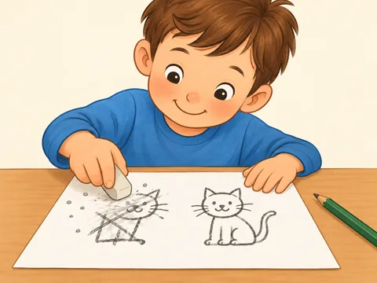
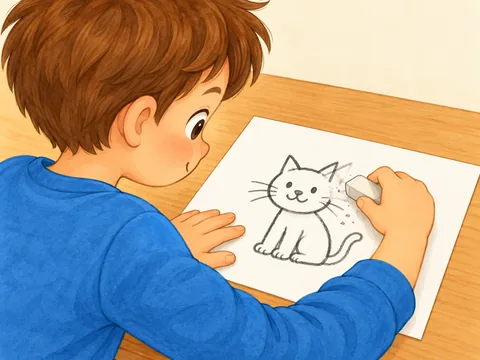
A2marker
You flagged: Upside-down picture (the marker card).
What changed: Girl and viewer share one side of the paper. Her green marker colours one leaf; the cap rests on the table.
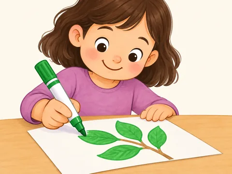
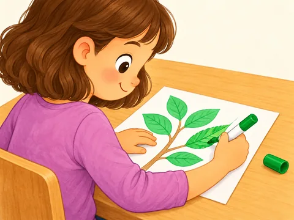
A3match
You flagged: Upside-down picture (the match card).
What changed: Cards face the girl and viewer together. She places the dog word card beside the dog picture; car and apple are paired too.
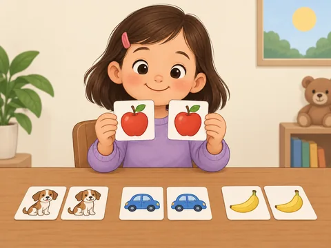
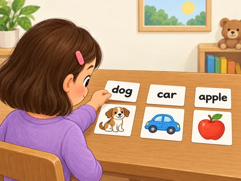
A4maths
You flagged: Upside-down picture (the maths card).
What changed: Girl and unicorn friend see the sheet from our side. Six separate unicorn stickers in two rows; she counts with one pointing hand.
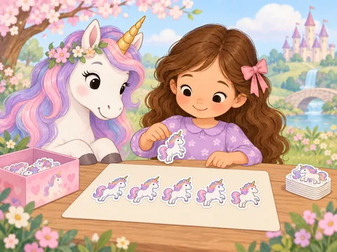
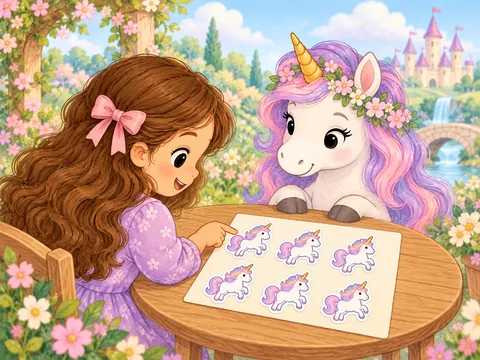
A5material
You flagged: Children were on their knees: redraw so they stand.
What changed: Both children now stand beside the river with both feet planted. Wood planks, red bricks and one rope coil are the bridge-material choices.
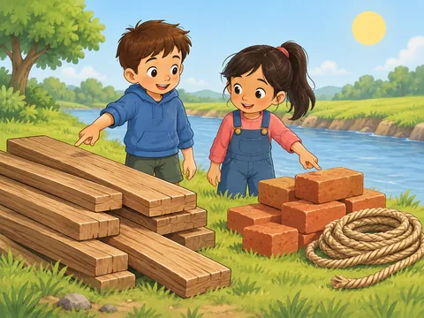
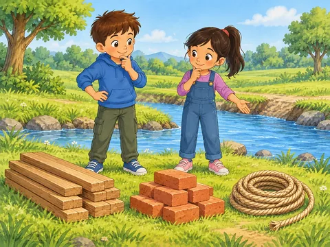
A6March
You flagged: Months (March, May) inconsistent with the other months like February.
What changed: March is now the same twelve-panel month strip as the others, with the kite-on-a-windy-hill panel enlarged and gold-framed.
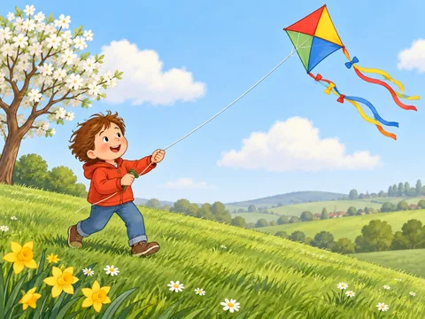
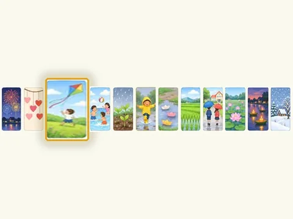
A7May
You flagged: Months (March, May) inconsistent with the other months like February.
What changed: May is the same twelve-panel strip, with the rain-on-new-plants panel enlarged and gold-framed.
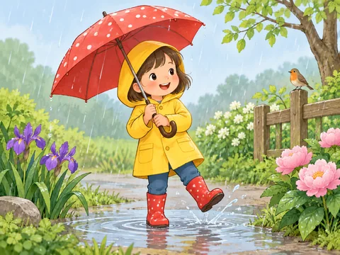
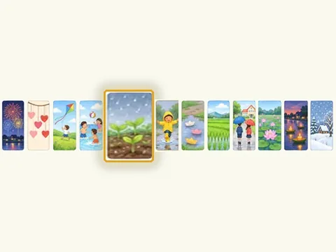
A8icon
You flagged: This one looks strange.
What changed: The tablet now shows six small app-icon tiles on a home screen, with the book tile tapped, instead of one huge open book with a finger on it.
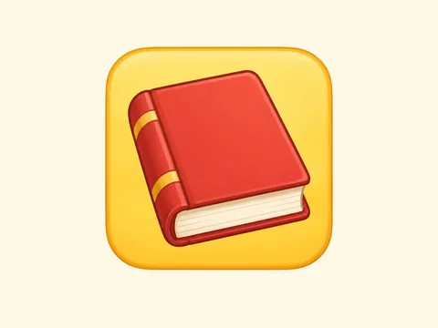
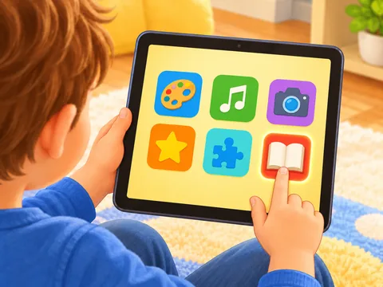
B. Orientation redraws (26 items)
B1apron
You flagged: Flat things (books, drawings, maps) were upside down for the children using them.
What changed: Both paintings face their child artists.
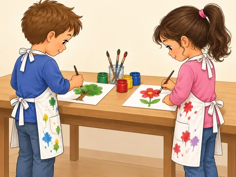
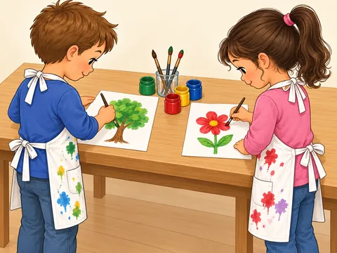
B2digit
You flagged: Flat things (books, drawings, maps) were upside down for the children using them.
What changed: The rocket's yellow 7 faces the boy writing on it.
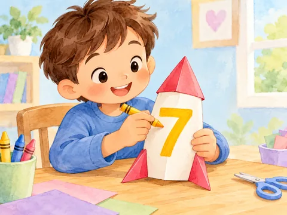
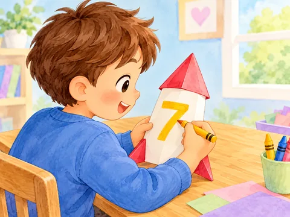
B3group
You flagged: Flat things (books, drawings, maps) were upside down for the children using them.
What changed: All three habitat mats face the kneeling children.
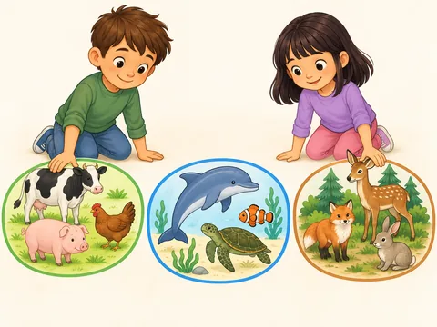
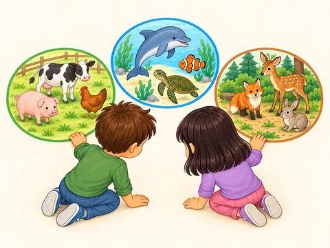
B4glasses
You flagged: Flat things (books, drawings, maps) were upside down for the children using them.
What changed: The open book faces Grandpa on the far side.
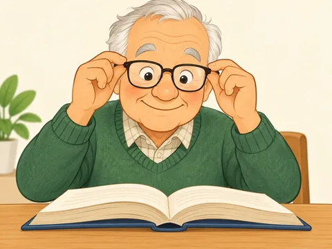
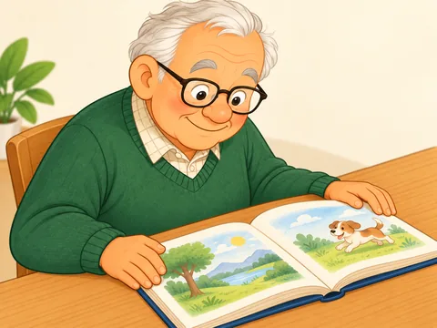
B5librarian
You flagged: Flat things (books, drawings, maps) were upside down for the children using them.
What changed: The dinosaur book faces both holders/readers.
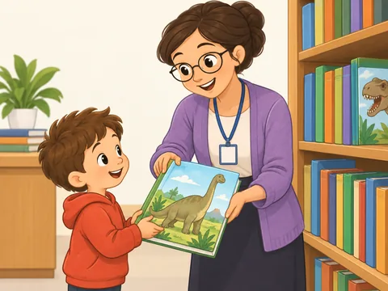
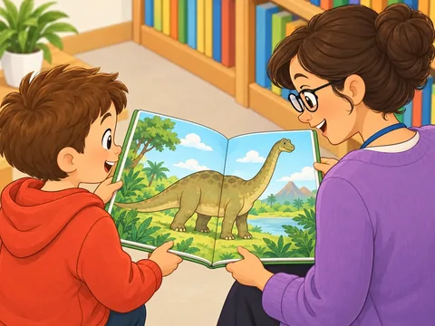
B6like
You flagged: Flat things (books, drawings, maps) were upside down for the children using them.
What changed: The castle-and-dragon book faces the girl reading on her tummy.
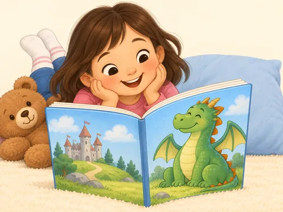
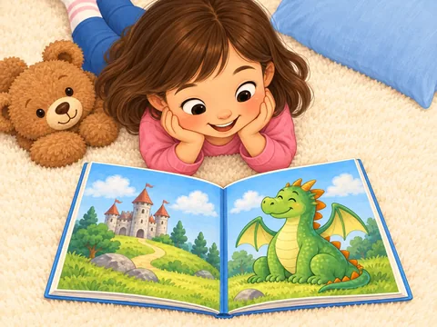
B7list
You flagged: Flat things (books, drawings, maps) were upside down for the children using them.
What changed: The illustrated packing list faces the girl writing it.
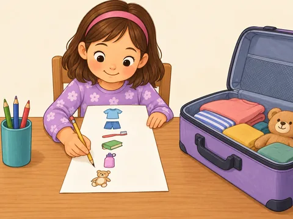
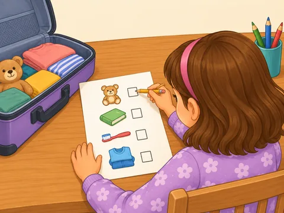
B8map
You flagged: Flat things (books, drawings, maps) were upside down for the children using them.
What changed: The hidden-garden map faces the princess drawing from the left.
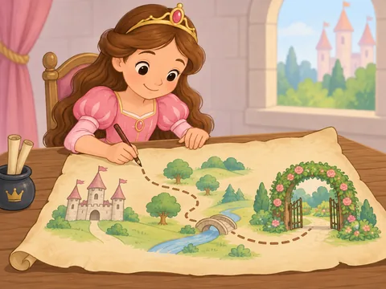
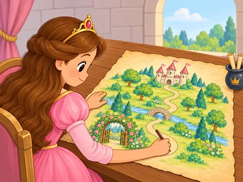
B9miss
You flagged: Flat things (books, drawings, maps) were upside down for the children using them.
What changed: The puppy photo faces the girl holding it.
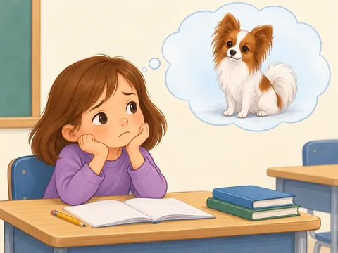
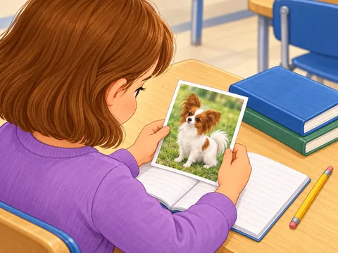
B10music
You flagged: Flat things (books, drawings, maps) were upside down for the children using them.
What changed: The tree and flower drawings face their artists.
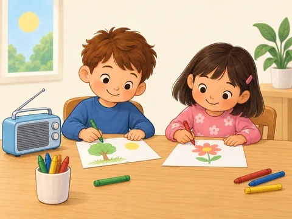

B11now
You flagged: Flat things (books, drawings, maps) were upside down for the children using them.
What changed: The path game board faces both kneeling players.
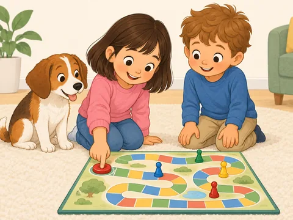
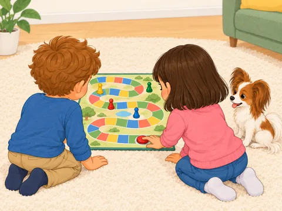
B12ours
You flagged: Flat things (books, drawings, maps) were upside down for the children using them.
What changed: The Vanilla picture dictionary faces both children.
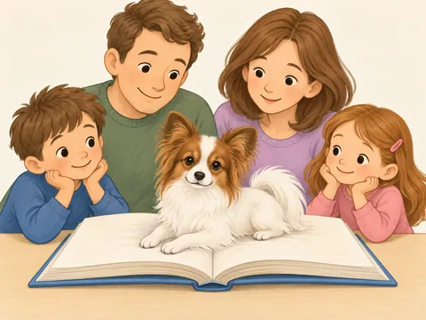
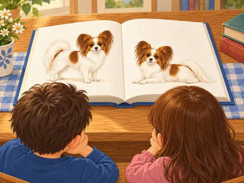
B13partner
You flagged: Flat things (books, drawings, maps) were upside down for the children using them.
What changed: The landscape puzzle faces both partners.
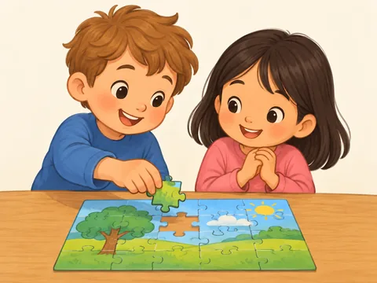
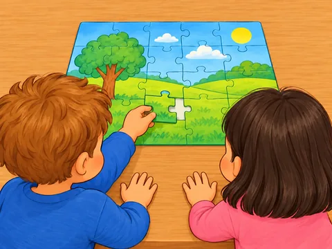
B14picture
You flagged: Flat things (books, drawings, maps) were upside down for the children using them.
What changed: The dog drawing faces the girl drawing from its upper-left edge.
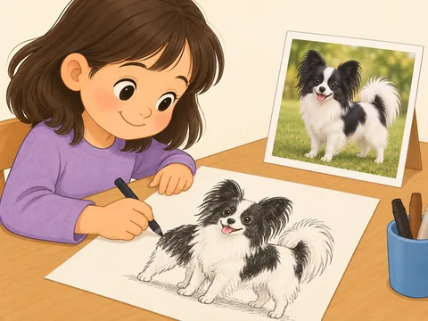
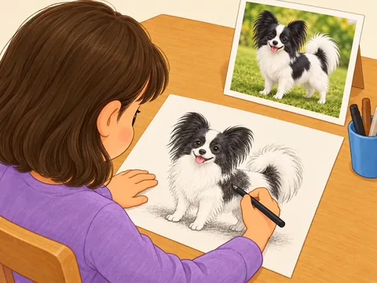
B15quiz
You flagged: Flat things (books, drawings, maps) were upside down for the children using them.
What changed: The animal quiz faces the boy writing and girl watching.
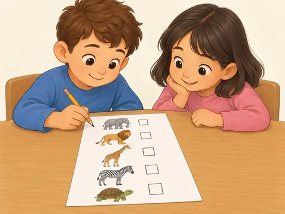
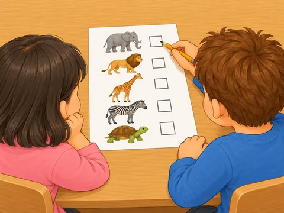
B16read
You flagged: Flat things (books, drawings, maps) were upside down for the children using them.
What changed: The tiny-dragon story faces Mum and the boy.
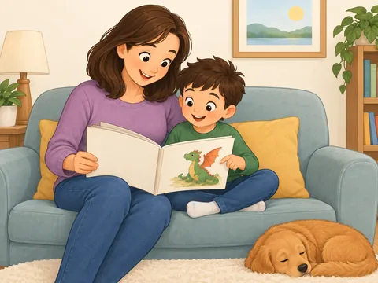
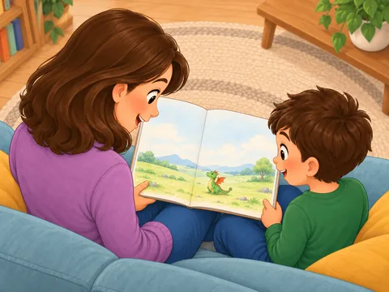
B17sequence
You flagged: Flat things (books, drawings, maps) were upside down for the children using them.
What changed: The three launch cards face both children arranging them.
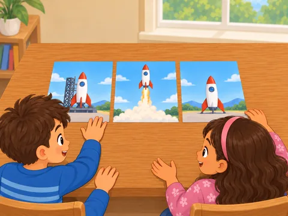
B18seven
You flagged: Flat things (books, drawings, maps) were upside down for the children using them.
What changed: The seven-fish pond picture faces the boy counting.
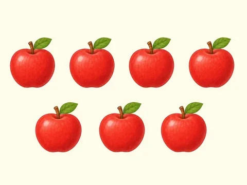
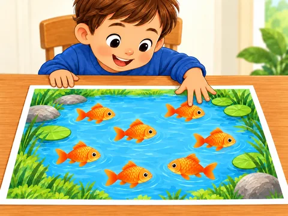
B19share
You flagged: Flat things (books, drawings, maps) were upside down for the children using them.
What changed: Both flower drawings face their child artists.
B20sorry
You flagged: Flat things (books, drawings, maps) were upside down for the children using them.
What changed: The wet tree-and-flower picture faces the apologetic boy.
B21stamp
You flagged: Flat things (books, drawings, maps) were upside down for the children using them.
What changed: The addressed envelope and flower stamp face the girl placing it.
B22thousand
You flagged: Flat things (books, drawings, maps) were upside down for the children using them.
What changed: The large landscape puzzle faces both builders.
B23twenty
You flagged: Flat things (books, drawings, maps) were upside down for the children using them.
What changed: Exactly twenty unicorn cards face both players.
B24verb
You flagged: Flat things (books, drawings, maps) were upside down for the children using them.
What changed: The jumping-child card and exact lowercase `jump` face both children.
B25useful
You flagged: Flat things (books, drawings, maps) were upside down for the children using them.
What changed: The torch-lit open book faces both readers.
B26want
You flagged: Flat things (books, drawings, maps) were upside down for the children using them.
What changed: The mermaid storybook faces both mermaid readers from their shared side.
Not fixed: grammar. Three redraws failed the five-finger pointing-hand rule, so the original picture stays.
C. Your five fixes from today (5 items)
C1like
You flagged: Upside down.
What changed: The camera is now behind the girl, so the castle-and-dragon book faces her naturally.

C2music
You flagged: Let's add the music notes to the picture (not the emoji).
What changed: One painted pair of quavers and one single quaver float from the music player toward the children.
C3my
You flagged: Looks strange, maybe just have a picture of a backpack.
What changed: One clear blue child's backpack, centred on a plain cream background, with a rocket patch and blank name tag.
C4news
You flagged: Problem with Dad's right arm and the table.
What changed: Dad's sleeve, forearm and hand are coherent, stay above the table and grip the newspaper cleanly.
C5north
You flagged: Strange. Just a map with no boy if it's hard to do.
What changed: A simple child-friendly map with a large compass rose, the north point highlighted and one correct N.
D. Voice: the L-word picks (5 items)
D1lettuce
What changed: Your pick from the L-word listening page is now the clip the app plays (v4, take 1).
D2like
What changed: Your pick from the L-word listening page is now the clip the app plays (v4, take 1).
D3line
What changed: Your pick from the L-word listening page is now the clip the app plays (v4, take 1).
D4live
What changed: Your pick from the L-word listening page is now the clip the app plays (v4, take 1).
D5lychee
What changed: Your pick from the L-word listening page is now the clip the app plays (v4, take 1).
E. New features (3 items)
E1Word Groups: browse by meaning
What changed: Our Dictionary has a second tab, Word Groups. 27 groups (Action Words, Feelings, Colours, Animals...) each carry your own icon. Open a group to see its words, split into subgroups with filter buttons (for example Move & Travel, Make & Change, Talk & Share).
E2The night-time Word Book room
What changed: The Word Book front page is now a night-time room with six landmarks: dictionary book, spelling board, writing desk, exam easel, Grammar Game table and bookshelf. Hover or focus a landmark and its name appears in a bubble above it. Room and Cards views both stay; the choice is remembered.
E3Grammar Game: cheer and spoken praise
What changed: A right answer now gets a praise word, a little confetti, the rising chime and the same praise spoken aloud (voice on). Six praise lines are picked at random; hear them below. Needs the Grammar Game, which is on in this Test Hub copy only.